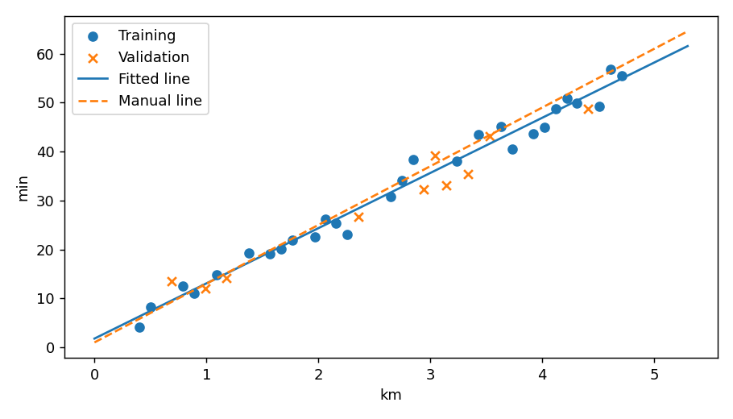

Ting Tan · EEEA · Oct 2026
Measured reference run · fictional classroom data
{
"slope_min_per_km": 11.280988,
"intercept_min": 1.783817,
"validation_MAE_min": 2.569424,
"baseline_training_mean_MAE_min": 10.148929,
"manual_slope": 12.0,
"manual_intercept": 1.0,
"manual_validation_MAE_min": 3.094
}| x_km | y_min | prediction_min | absolute_error_min |
|---|---|---|---|
| 0.69 | 13.5 | 9.568 | 3.932 |
| 0.99 | 12.02 | 12.952 | 0.932 |
| 1.18 | 14.23 | 15.095 | 0.865 |
| 2.36 | 26.62 | 28.407 | 1.787 |
| 2.94 | 32.34 | 34.95 | 2.61 |
| 3.04 | 39.21 | 36.078 | 3.132 |
| 3.14 | 33.1 | 37.206 | 4.106 |
| 3.34 | 35.47 | 39.462 | 3.992 |
| 3.53 | 43.16 | 41.606 | 1.554 |
| 4.41 | 48.75 | 51.533 | 2.783 |

{'python': '3.8.20', 'numpy': '1.24.4', 'sklearn': '1.3.2', 'matplotlib': '3.7.4'}